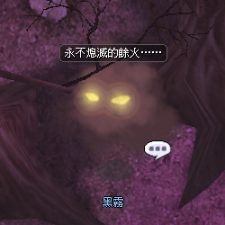
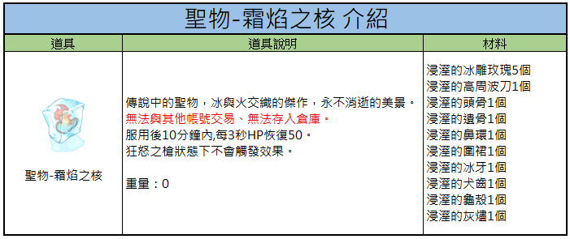
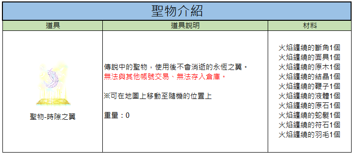
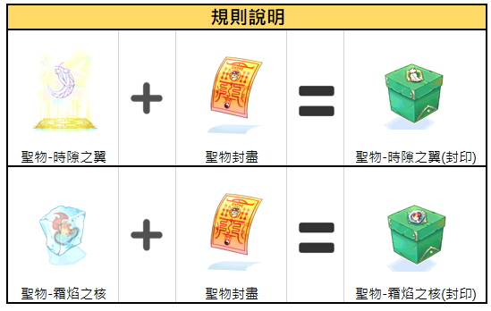
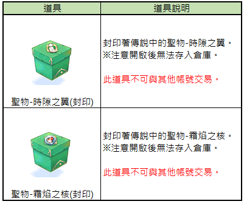

Reliquien-System (聖物)
Quest-basierte Spezial-Rewards durch „Flüster-Gerüchte" — mit Frost-Flamme-Kern und Zeit-Riss-Flügel zwei aktuelle Reliquien, plus Storage-Transfer seit April 2026.
🔮 Was ist eine Reliquie (聖物)?
Reliquien sind Quest-Rewards, die du erhältst, indem du spezielle Monster-Drops („魔物特殊掉落道具") an bestimmte NPCs abgibst. Jede Reliquie hat eine eigene Quest-Linie und eigene Drop-Anforderungen.
❄️ Reliquie 1: Frost-Flamme-Kern (霜焰之核)
NPC: Schwarzer Nebel (黑霧)
Position: /navi niflheim 209/275
Quest-Flow: Sprich mit „Schwarzer Nebel", bringe alle angeforderten 魔物特殊掉落道具 → erhalte den 聖物-霜焰之核 (Frost-Flamme-Kern).

📋 NPC Dialog — Deutsch aufklappen
Ein Screenshot eines NPCs namens 'Schwarzer Nebel', der einen Dialog über ein niemals erlöschendes Feuer führt.
- 永不熄滅的餘火…… (Unendliche Glut...)
- 黑霧 (Schwarzer Nebel)
Der Text '永不熄滅的餘火……' wird in einer Sprechblase über dem leuchtenden Objekt angezeigt, '黑霧' ist der Name des NPCs direkt darunter.

📋 Einführung zum Relic-Frostfire Core — Deutsch aufklappen
Dies ist eine Übersichtstabelle über das Item 'Relic-Frostfire Core', seine Eigenschaften und die benötigten Handwerksmaterialien.
| Gegenstand | Gegenstandsbeschreibung | Materialien |
|---|---|---|
| Relic-Frostfire Core | Ein legendäres Relikt, ein Meisterwerk aus Eis und Feuer, ein niemals endender Anblick. Kann nicht mit anderen Accounts gehandelt oder in den Lagerraum gelegt werden. Nach der Verwendung werden innerhalb von 10 Minuten alle 3 Sekunden 50 HP wiederhergestellt. Der Effekt wird nicht ausgelöst, wenn sich der Charakter im Zustand 'Berserk' befindet. Gewicht: 0 | 5x Imbued Ice Rose, 1x Imbued High Orc Axe, 1x Imbued Skull, 1x Imbued Remains, 1x Imbued Nose Ring, 1x Imbued Apron, 1x Imbued Ice Tooth, 1x Imbued Canine Tooth, 1x Imbued Tortoise Shell, 1x Imbued Ashes |
Die Materialien im Spiel verwenden das Präfix 'Imbued' (浸潤的), was hier als 'durchdrungen' oder 'getränkt' übersetzt werden kann.
⏳ Reliquie 2: Zeit-Riss-Flügel (時隙之翼)
NPC: Brocks Vermächtnis (布羅克的遺願)
Position: /navi prontera 254/293
Quest-Flow: Sprich mit „Brocks Vermächtnis", gib die angeforderten 魔物特殊掉落道具 ab → erhalte den 聖物-時隙之翼 (Zeit-Riss-Flügel).

📋 Übersetzung — Deutsch aufklappen
Ein In-Game-Objekt, das als 'Black's Will' (布羅克的遺願) identifiziert wurde, dargestellt als eine schwebende, leuchtende Flamme über einem runden Sockel.

📋 Einführung in die Relikte — Deutsch aufklappen
Tabelle mit Informationen zum Gegenstand 'Relic - Wing of Time Rift' und den benötigten Herstellungsmaterialien.
| Gegenstand | Beschreibung | Materialien |
|---|---|---|
| Relic - Wing of Time Rift | Legendäres Relikt, ein ewiger Flügel, der nach Gebrauch nicht verschwindet. Kann nicht mit anderen Accounts gehandelt und nicht in der Lagerhalle abgelegt werden. ※ Kann auf der Karte zu einem zufälligen Ort bewegen. Gewicht: 0 | 1x Flame-Entwined Broken Horn, 1x Flame-Entwined Mask, 1x Flame-Entwined Log, 1x Flame-Entwined Crystal, 1x Flame-Entwined Whip, 1x Flame-Entwined Liquid, 1x Flame-Entwined Rough Stone, 1x Flame-Entwined Snake Hair, 1x Flame-Entwined Rune Stone, 1x Flame-Entwined Feather |
Die im Feld 'Materialien' aufgeführten Gegenstände sind spezifische Zutaten für das 'Relic - Wing of Time Rift'.
📦 Reliquie-Storage-Transfer (聖物封盡)
NPC: Tempest (坦派思忒)
Position: /navi prontera 240/293
Flow: Sprich mit Tempest, gib die Reliquie + den Item 聖物封盡 (Reliquien-Versiegelung) ab → erhalte eine versiegelte Reliquie.

📋 NPC-Information — Deutsch aufklappen
Ein Bild eines Geschenkbox-NPCs namens 'Tampice' unter einem Baum.
- Tampice
Der Name des NPCs wird hier als 'Tampice' transliteriert, basierend auf dem chinesischen Namen '坦派思' (Tan Pai Si).

📋 Regelerklärung — Deutsch aufklappen
Diese Tabelle zeigt die Kombination von Gegenständen, um versiegelte Relikte zu erhalten.
| Zutat 1 | Zutat 2 | Ergebnis |
|---|---|---|
| Relic - Wing of Time | Relic Seal | Relic - Wing of Time (Sealed) |
| Relic - Frostflame Core | Relic Seal | Relic - Frostflame Core (Sealed) |
Die Kombination erfordert ein 'Relic Seal', um den entsprechenden Gegenstand zu versiegeln.

📋 Gegenstandsliste — Deutsch aufklappen
Tabelle mit versiegelten Relikt-Gegenständen aus Ragnarok Zero und ihren entsprechenden Beschreibungen.
| Gegenstand | Gegenstandsbeschreibung |
|---|---|
| Relic - Wing of Time (Sealed) | Enthält das legendäre Relikt - Wing of Time. ※Achtung: Nach dem Öffnen kann es nicht mehr in das Lager gelegt werden. Dieser Gegenstand ist nicht mit anderen Accounts handelbar. |
| Relic - Core of Frost Flame (Sealed) | Enthält das legendäre Relikt - Core of Frost Flame. ※Achtung: Nach dem Öffnen kann es nicht mehr in das Lager gelegt werden. Dieser Gegenstand ist nicht mit anderen Accounts handelbar. |
Die roten Textzeilen in der Beschreibung weisen darauf hin, dass der Gegenstand an den Account gebunden ist.
💡 Strategie-Tipps
- Reliquien sind langfristig geplant — Farming der Spezial-Drops kann mehrere Wochen dauern. Nicht als Kurzfrist-Ziel planen
- Reihenfolge: Beide Reliquien sind komplementär — eine auf Offense, eine auf Defense/Utility. Entscheidung je nach Build/Klasse
- Storage-Transfer nutzen: Seit April 2026 kannst du die Reliquie auf Bedarf zwischen Chars verschieben — ideal für Multi-Char-Setups
- Community-Lookup: Die Drop-Quellen sind offiziell nicht veröffentlicht. Discord/TW-Foren konsultieren für aktuelle Drop-Routen